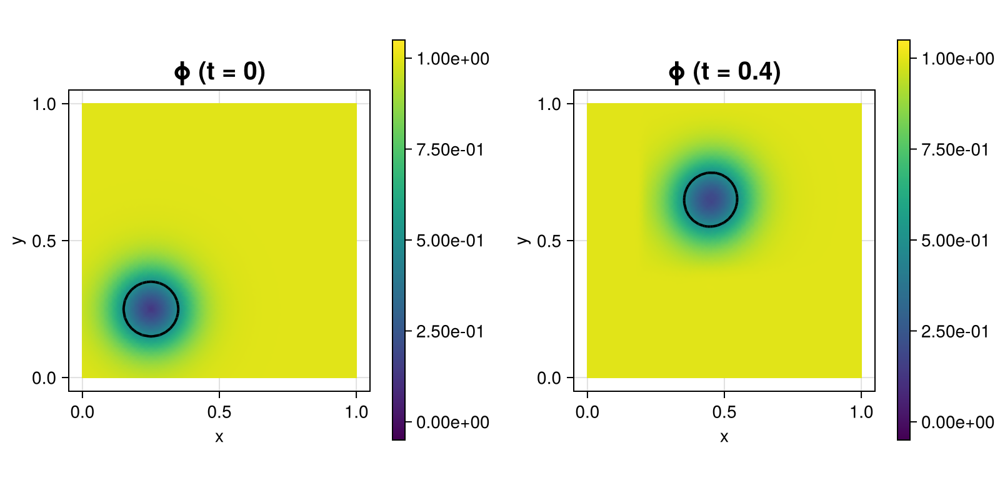

284 : Level Set Method
This example studies the level-set method of some level function $\mathbf{\phi}$ convected in time via the equation
\[\begin{aligned} \phi_t + \mathbf{u} \cdot \nabla \phi & = 0. \end{aligned}\]
Here this is tested with the (conservative) initial level set function $\phi(x) = 0.5 \tanh((\lvert x - (0.5,0.75) \rvert - 0.15)/(2ϵ) + 1)$ such that the level $\phi \equiv 0.5$ forms a circle which is then convected by the velocity $\mathbf{u} = \mathrm{curl} \pi^{-1} \sin^2(\pi x) \sin^2(\pi y)$. No reinitialisation step is performed.
The initial condition and the solution at $T = 1$ for the default parameters looks like this:

module Example284_LevelSetMethod
using ExtendableFEM
using ExtendableGrids
using GridVisualize
using LinearAlgebra
using OrdinaryDiffEqSDIRK
function ϕ_init!(result, qpinfo)
x = qpinfo.x
ϵ = qpinfo.params[1]
result[1] = 1 / 2 * (tanh((sqrt((x[1] - 0.5)^2 + (x[2] - 0.75)^2) - 0.15) / (2 * ϵ)) + 1)
return nothing
end
function velocity!(result, qpinfo)
result[1] = 0.5
result[2] = 1.0
result[1] = -2 * cos(π * qpinfo.x[2]) * sin(π * qpinfo.x[2]) * sin(π * qpinfo.x[1])^2
result[2] = 2 * cos(π * qpinfo.x[1]) * sin(π * qpinfo.x[1]) * sin(π * qpinfo.x[2])^2
return nothing
end
function kernel_convection!()
u = zeros(Float64, 2)
return function closure(result, input, qpinfo)
velocity!(u, qpinfo)
result[1] = dot(u, input)
return nothing
end
end
# everything is wrapped in a main function
function main(;
Plotter = nothing, ϵ = 0.05, τ = 1.0e-2, T = 1.0, order = 2, nref = 6, use_diffeq = false,
solver = ImplicitEuler(autodiff = false), verbosity = -1, kwargs...
)
# initial grid and final time
xgrid = uniform_refine(grid_unitsquare(Triangle2D), nref)
# define main level set problem
PD = ProblemDescription("level set problem")
ϕ = Unknown("ϕ"; name = "level set function")
assign_unknown!(PD, ϕ)
assign_operator!(PD, BilinearOperator(kernel_convection!(), [id(ϕ)], [grad(ϕ)]; kwargs...))
assign_operator!(PD, HomogeneousBoundaryData(ϕ; value = 1, regions = 1:4, kwargs...))
# generate FESpace and solution vector and interpolate initial state
FES = FESpace{H1Pk{1, 2, order}}(xgrid)
sol = FEVector(FES; tags = PD.unknowns)
interpolate!(sol[ϕ], ϕ_init!; params = [ϵ])
# prepare plot and plot init solution
plt = GridVisualizer(; Plotter = Plotter, layout = (1, 2), clear = true, resolution = (800, 400))
scalarplot!(plt[1, 1], id(ϕ), sol; levels = [0.5], flimits = [-0.05, 1.05], colorbarticks = [0, 0.25, 0.5, 0.75, 1], title = "ϕ (t = 0)")
if (use_diffeq)
# generate DifferentialEquations.ODEProblem
prob = generate_ODEProblem(PD, FES, (0.0, T); init = sol, constant_matrix = true)
# solve ODE problem
de_sol = DifferentialEquations.solve(prob, solver, abstol = 1.0e-6, reltol = 1.0e-4, dt = τ, dtmin = 1.0e-8, adaptive = true)
@info "#tsteps = $(length(de_sol))"
# get final solution
sol.entries .= de_sol[end]
else
# add backward Euler time derivative
M = FEMatrix(FES)
assemble!(M, BilinearOperator([id(1)]))
assign_operator!(PD, BilinearOperator(M, [ϕ]; factor = 1 / τ, kwargs...))
assign_operator!(PD, LinearOperator(M, [ϕ], [ϕ]; factor = 1 / τ, kwargs...))
# generate solver configuration
SC = SolverConfiguration(PD, FES; init = sol, maxiterations = 1, constant_matrix = true, verbosity = verbosity, kwargs...)
# iterate tspan
t = 0
for it in 1:Int(floor(T / τ))
t += τ
ExtendableFEM.solve(PD, FES, SC; time = t)
#scalarplot!(plt[1, 2], id(ϕ), sol; levels = [0.5], flimits = [-0.05, 1.05], colorbarticks = [0, 0.25, 0.5, 0.75, 1], title = "ϕ (t = $t)")
end
end
# plot final state
scalarplot!(plt[1, 2], id(ϕ), sol; levels = [0.5], flimits = [-0.05, 1.05], colorbarticks = [0, 0.25, 0.5, 0.75, 1], title = "ϕ (t = $T)")
return sol, plt
end
endThis page was generated using Literate.jl.